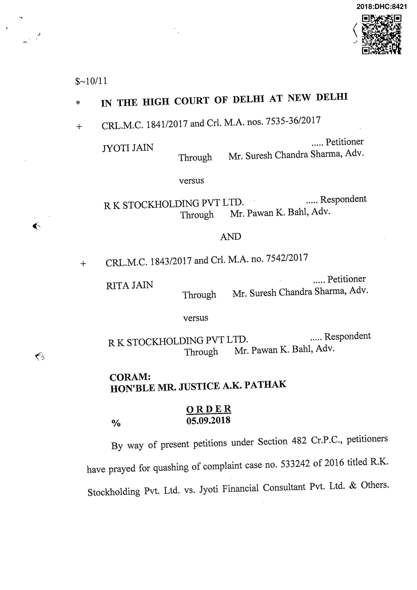
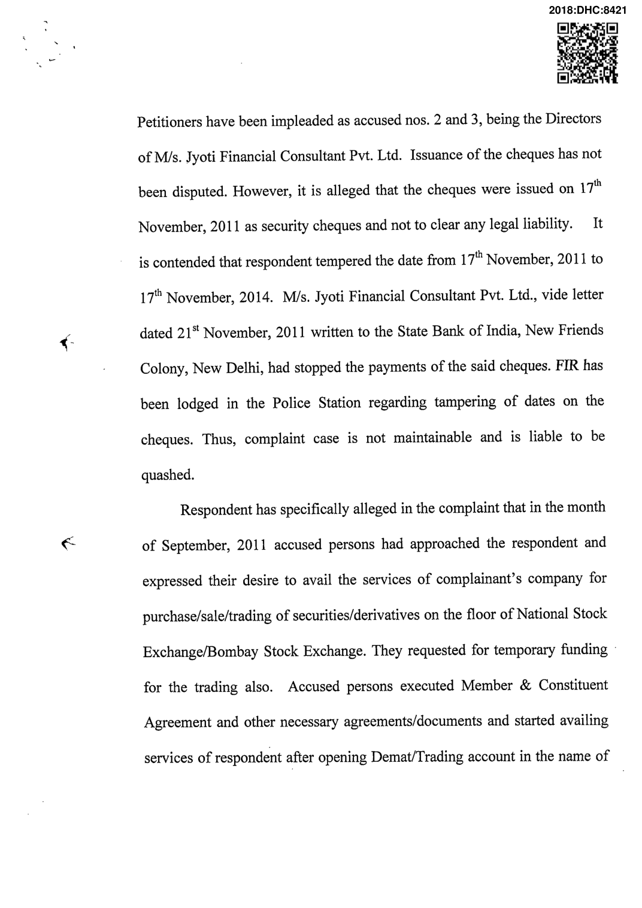

M/s. Jyoti Financial Consultant Pvt. Ltd. Accused persons were irregular in payment of their liabilities towards the complainant company since the beginning and their outstanding balance in complainant's books kept on increasing day-by-day. By the end of August, 2012, outstanding amount accumulated to ?50,00,000/-. In the month of May, 2014, accused persons approached the respondent and showed their willingness to settle the matter amicably. Accordingly, two cheques bearing cheque no. 206821 dated 17"'' November, 2014 for ?10,00,000/-and cheque no. 206823 for ^5,00,000/both drawn on State Bank of India, New Friends Colony, New Delhi, were issued to clear part liabilities. However, on presentation, the said cheques were returned dishonoured with the remarks "payment stopped by drawer", vide bank return memos dated lO"" February, 2015. Despite legal notice, the amount was not paid. Hence, the complaint. Learned counsel for the respondent submits that allegations and counter allegations are subject matter of trial. The plea taken by the petitioners is at best their defence, which they have to prove during the trial. I am of the view that pleas taken by the petitioners that the cheques were manipulated and/or same were issued as security in the year 2011 are subject matter of trial. Disputed questions of facts cannot be decided by the High Court in exercise of inherent power under Section 482 Cr.P.C. Respondent specifically alleged in the complaint that cheques were issued on 17^' November, 2014 to clear outstanding liabilities. This fact has been disputed. As per the petitioners, cheques have been manipulated. Veracity of allegations and counter-allegations can be tested only durmg the trial. At this stage, averments made in the complainant have to be taken on its face value and cannot be discarded without a trial. In my view, complaint cannot < be quashed at this stage by this Court in exercise of the inherent jurisdiction under Section 482 Cr.P.C. Petitions are dismissed with costs of ?15,000/- each to be deposited in Kerala Chief Minister's Distress Relief Fund within two weeks. No other petition of the petitioners be entertained by the Registry unless receipts evidencing the deposit ofcosts are produced. Miscellaneous applications are disposed ofas infructuous. A.K. PATHAK, J. SEPTEMBER 05, 2018 r. bararia